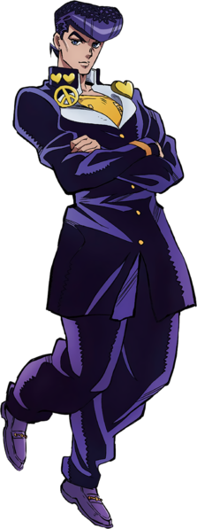

Você pode me chamar de o homem que faz sobre pressão, "Josuke Higashikata"!
Josuke Higashikata (東方 仗助 Higashikata Jōsuke) é o protagonista da quarta parte de JoJo's Bizarre Adventure, Diamond is Unbreakable, e o quarto JoJo da série. Ele é o filho ilegítimo de Joseph Joestar e Tomoko Higashikata. Josuke é um estudante do primeiro ano do ensino médio residindo na cidade de Morioh. No ano de 1999, ele conhece Jotaro Kujo, que informa ele que ele é o filho ilegítimo de Joseph. Quando seu avô morre, Josuke decide assumir a si mesmo como o protetor da sua amada cidade contra usuários malevolentes de Stand. Josuke é um usuário de Stand que possui Crazy Diamond, um Stand com o poder de reparar quase qualquer coisa.
 Josuke é um jovem alto, e belo de porte médio. A característica mais proeminente dele é o seu pompadour bem-cuidado, moldado no de um homem desconhecido que salvou sua vida quando criança. Seu pompadour tem uma tendência à ficar pontiagudo com seu humor, quando ele está irritado ou zangado. Josuke veste um uniforme escolar japonês escuro e modificado. Sua jaqueta é de tamanho ideal ao seu corpo, se estendendo até o meio de sua coxa, acompanhada de um par de calças de pernas largas. Ele mantem sua jaqueta desabotoada e dobrada para o lado, revelando uma camisa clara com zíperes curtos em cada lado de seu peito. Ele usa um brinco pequeno em cada orelha. Josuke veste um número de emblemas metálicos/dourados. No lado esquerdo de seu colarinho, ele usa uma âncora modificada e na sua direita, dois corações pequenos. Fixando sua jaqueta aberta para o lado em sua direita está um símbolo da paz (☮), e do seu lado esquerdo um coração (ocasionalmente uma palma aberta, como no chapéu de Jotaro). Ele possuí uma banda dourada sobre as mangas de sua jaqueta em ambos seus pulsos (mais elaborado em várias ilustrações)
A característica primária de Josuke é sua bondade em geral, que é refletida em seu Stand, Crazy Diamond, que repara e cura.Quando criança, um espectador aleatório salvou um Josuke enfermo por pura gentileza, Josuke subconscientemente refletiu essa bondade em si mesmo. Mesmo depois da revelação de ser o filho bastardo de Joseph, Josuke primeiramente pensou nos problemas que ele poderia ter causado aos Joestars e negou qualquer reivindicação de herança, querendo apenas assegurar ao seu pai biológico que ele estava bem. Agradável por natureza Josuke não é tão propenso à violência quanto outros JoJos e até calmamente tolera assédio de vetenaros ou o egoísmo de Shigechi. Josuke é leal aos seus amigos e entes queridos; arriscand sua vida depois que Koichi foi acertado pelo Arco de Keicho, e carregando Okuyasu enquanto aparentemente morto na primeira parte de sua batalha contra Yoshikage Kira. Quando seu avô morreu, Josuke tomou à si mesmo como protetor de Morioh. Após conhecer alguém em circunstâncias não particularmente antagonisticas, Josuke geralmente os trata educadamente e amigavelmente.
O Stand de Josuke, Crazy Diamond, pode restaurar objetos (e organismos) para um estado prévio em sua história. Ele é capaz de restaurar dano e curar feridas. Ele também pode reverter um item para seus componentes (ex. uma mesa de madeira de volta para madeira serrada).
| Imagem | Estreia | Tipo | Habilidade | Grito de Batalha |
|---|---|---|---|---|
| Capítulo 266 / Du Episódio 1 | Curto-Alcance | Restauração |
Com isso, Crazy Diamond pode realizar uma grande variedade de feitos; incluindo prender (partes de) um inimigo por restaurar pedaços de um objeto quebrado em volta dele; e localizar, realizado ao restaurar algo com um pedaço rasgado de roupa, que procura se recolocar no artigo original de roupa. Porém, esse Stand não tem limites: Crazy Diamond pode apenas restaurar estado, não vida, por isso um corpo sem vida continuaria morto mesmo depois de ter sido reparado pelo poder de Crazy Diamond. E também, o poder de cura não pode ser usado no próprio Josuke, ou estritamente falando, qualquer coisa que pode ser considerada parte de si mesmo, corpo ou até suas próprias roupas.
Josuke demonstra grande proficiência usando Crazy Diamond em combate. Graças à sua grande destreza física, Josuke pode usar os punhos de Crazy Diamond para realizar táticas fora-da-caixa como quebrar uma parede para escapar um ataque. Além disso, ele demonstrou poder jogar projéteis com grande eficiência graças à força bruta de sua precisão e Stand.
Adicionalmente, Josuke já foi mostrado usando seu poder presumidamente restrito para uma grande variedade de objetivos táticos. O poder de Crazy Diamond de reparar qualquer coisa faz do Josuke um grande curador, desde que ele consiga chegar em seus aliados antes de morrerem, e trabalha excepcionalmente bem com um parceiro por causa disso. Porque ele consegue quebrar objetos e repara-los, Josuke é libertino em quebrar qualquer coisa para conseguir algo que ele quer como uma posição mais favorável ou um item chave como combustível para uma motocicleta, usar um item precioso como influência, ou até destruir sua moto para evitar um carrinho de bebê; ele eventualmente repara qualquer coisa que ele quebrou, cancelando qualquer consequência que suas ações teriam quebrado. Josuke pode facilmente tirar proveito do ambiente para sua vantagem graças ao Crazy Diamond. Sua habilidade de reparo faz com que ele possa manipular o ambiente até certo ponto, como criar um escudo de concreto ou fazer uma armadilha com os pedaços quebrados de um objeto apenas para os reparar em volta do inimigo. A letalidade do seu projétil pode aumentar como ele pode criar um efeito bumerangue por forçar um pedaço à voltar à ele, acertando um inimigo por trás.
Inteligência: Josuke é extremamente rápido para se manter em pé em qualquer circunstância como ele é muito consciente de seus arredores imediatos e suas próprias capacidades. Ele é proficiente em utilizar qualquer coisa que ele tem em alcance para cuidar de qualquer problema em mãos e já foi mostrado ser capaz de planejar diversos passos à frente por ler o comportamento e hábitos de seu oponente. Josuke é muito confiante em suas habilidades para o ponto de dizer que nada é capaz que Crazy Diamond (indiretamente referindo à si mesmo) não repare e expressa um leve desapontamento à descobrir o que ele achava que seria apenas um problema. Como resultado de seu intelecto, Josuke pode ser bastante ardiloso: manipulando, mentindo, e enganando outros ocasionalmente para atingir objetivos egoístas.
Aptidão Física: Josuke possuí uma habilidade atlética substancial. Ele já foi mostrado ter conseguido com perseguir um ônibus em movimento sobre longas distâncias completamente à pé com sucesso, e consegue manusear uma moto pesada sem esforço pela primeira vez e apenas dirigindo ela enquanto conquistando muitas proezas profissionais durante uma perseguição à alta-velocidade em tentativas de evitar contatos diretos com o inimigo perseguindo ele. A mais conhecida demonstração da resistência física de Josuke é mostrada quando ele aguenta várias explosões geradas pelo Killer Queen de Yoshikage Kira, tendo muitos ferimentos pesados e perca de sangue mas continuando consciente o suficiente para pensar em contramedidas e táticas.
Jotaro Kujo: Mesmo tendo lutado com Jotaro na primeira vez que eles se encontraram, Josuke rapidamente começou a confiar em Jotaro depois de sua batalha com Angelo e depois de Jotaro o contar os detalhes sobre os usuários de Stand em Morioh. Mais tarde, quando Jotaro o leva para caçar, Josuke é rápido para aceitar e confia em sua estratégia. Eles também se juntam para lutar contra Yoshikage Kira. Mesmo Josuke sendo tecnicamente o tio de Jotaro, ele vê Jotaro como um mentor e Jotaro cuida de Josuke como um irmão mais novo, embora ele também é levemente exasperado pelo temperamento de Josuke e suas habilidades de Stand ainda não dominadas. Os dois são descrevidos como tendo um relacionamento de confiança e respeito mútuo, Entretanto Josuke tende à se sentir sob pressão com Jotaro devido à sua maior experiência e poder. Ele também admira o Stand de Jotaro chamando seu Star Platinum de invencível durante sua luta com Akira Otoishi e novamente quando lutando com Yoshihiro Kira.